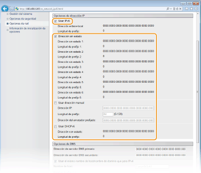

0KXF-022
|
Para configurar direcciones IPv6 utilice el IU remoto. Antes de configurar direcciones IPv6, compruebe que la dirección IPv4 se ha configurado correctamente (Visualización de las opciones de red). Puede registrar hasta nueve de las siguientes direcciones IPv6.
|
|
Tipo
|
Número máximo disponible
|
Descripción
|
|
Dirección de enlace local
|
1
|
Dirección que solo es válida en una subred o enlace y no puede utilizarse para establecer la comunicación con dispositivos más allá de un router. Si la función IPv6 del equipo está activada, se configurará automáticamente una dirección de enlace local.
|
|
Dirección manual
|
1
|
Dirección que se introduce manualmente. Especifique la longitud del prefijo y la dirección del enrutador prefijado.
|
|
Dirección sin estado
|
6
|
Dirección que se genera automáticamente utilizando la dirección MAC del equipo y el prefijo de red que anuncia el router. Las direcciones sin estado se desechan cuando se reinicia (o se enciende) el equipo.
|
|
Dirección con estado
|
1
|
Dirección obtenida a partir de un servidor DHCP utilizando DHCPv6.
|
1
Inicie el IU remoto e inicie sesión en modo Administrador del Sistema. Inicio del IU remoto
2
Haga clic en [Configuración].

3
Haga clic en [Opciones de red]  [Opciones de TCP/IP].
[Opciones de TCP/IP].

4
Haga clic en [Editar] en [Opciones de IPv6].

5
Seleccione la casilla de verificación [Usar IPv6] y configure las opciones necesarias.

[Usar IPv6]
Marque la casilla de verificación para utilizar IPv6 en el equipo. Desmárquela si no desea utilizar IPv6.
Marque la casilla de verificación para utilizar IPv6 en el equipo. Desmárquela si no desea utilizar IPv6.
[Dirección sin estado]
Comprobación para utilizar direcciones sin estado. Desmarque la casilla de verificación si no desea utilizar direcciones sin estado.
Comprobación para utilizar direcciones sin estado. Desmarque la casilla de verificación si no desea utilizar direcciones sin estado.
[Usar dirección manual]
Si desea introducir una dirección IPv6 manualmente, marque la casilla de verificación e introduzca valores en los cuadros de texto [Dirección IP], [Longitud de prefijo] y [Dirección del enrutador prefijado]. Desmarque la casilla de verificación si no desea introducir ninguna dirección manual.
Si desea introducir una dirección IPv6 manualmente, marque la casilla de verificación e introduzca valores en los cuadros de texto [Dirección IP], [Longitud de prefijo] y [Dirección del enrutador prefijado]. Desmarque la casilla de verificación si no desea introducir ninguna dirección manual.
[Dirección IP]
Introduzca una dirección IPv6. No es posible introducir direcciones que comienzan por "ff" (direcciones multidifusión) ni la dirección de bucle (::1).
Introduzca una dirección IPv6. No es posible introducir direcciones que comienzan por "ff" (direcciones multidifusión) ni la dirección de bucle (::1).
[Longitud de prefijo]
Introduzca la longitud (número de bits) de la porción de red de la dirección.
Introduzca la longitud (número de bits) de la porción de red de la dirección.
[Dirección del enrutador prefijado]
En caso necesario, especifique la dirección del enrutador prefijado. No es posible introducir direcciones que comienzan por "ff" (direcciones multidifusión) ni la dirección de bucle (::1).
En caso necesario, especifique la dirección del enrutador prefijado. No es posible introducir direcciones que comienzan por "ff" (direcciones multidifusión) ni la dirección de bucle (::1).
[Usar DHCPv6]
Marque la casilla de verificación para utilizar la dirección con estado. Desmárquela si no desea utilizar la dirección con estado.
Marque la casilla de verificación para utilizar la dirección con estado. Desmárquela si no desea utilizar la dirección con estado.
6
Haga clic en [Aceptar].

7
Reinicie el equipo.
Apague el equipo, espere al menos 10 segundos y vuelva a encenderlo.
 |
|
Comprobación de las opciones correctas
Asegúrese de que la pantalla del IU remoto puede mostrarse en el ordenador utilizando la dirección IPv6 del equipo. Inicio del IU remoto
Si cambia las direcciones IP tras instalar el controlador de impresora
Tiene que agregar un puerto nuevo. Configuración de los puertos de la impresora
|